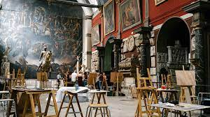

Les ateliers des Beaux-Arts à Paris
Paris est connue pour ses nombreux ateliers d'artistes où la créativité s'épanouit et où l'art sous toutes ses formes est célébré. Voici quelques-uns des ateliers les plus renommés de la ville :
L'École Nationale Supérieure des Beaux-Arts (ENSBA)
Fondée en 1648, l'École Nationale Supérieure des Beaux-Arts (ENSBA) est l'une des écoles d'art les plus prestigieuses au monde, offrant des formations en arts plastiques, en sculpture, en peinture, en gravure, etc.

Ateliers Beaux-Arts de la Ville de Paris
Les Ateliers beaux-arts de la ville de Paris sont un réseau de seize établissements d'enseignement de différentes disciplines des beaux-arts répartis sur l'ensemble de la commune de Paris.
